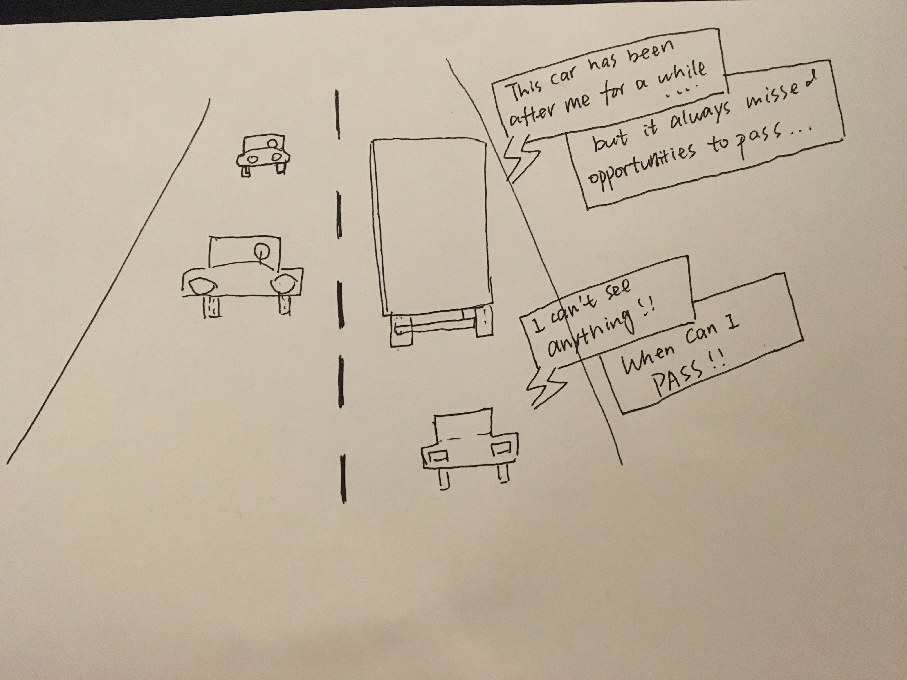
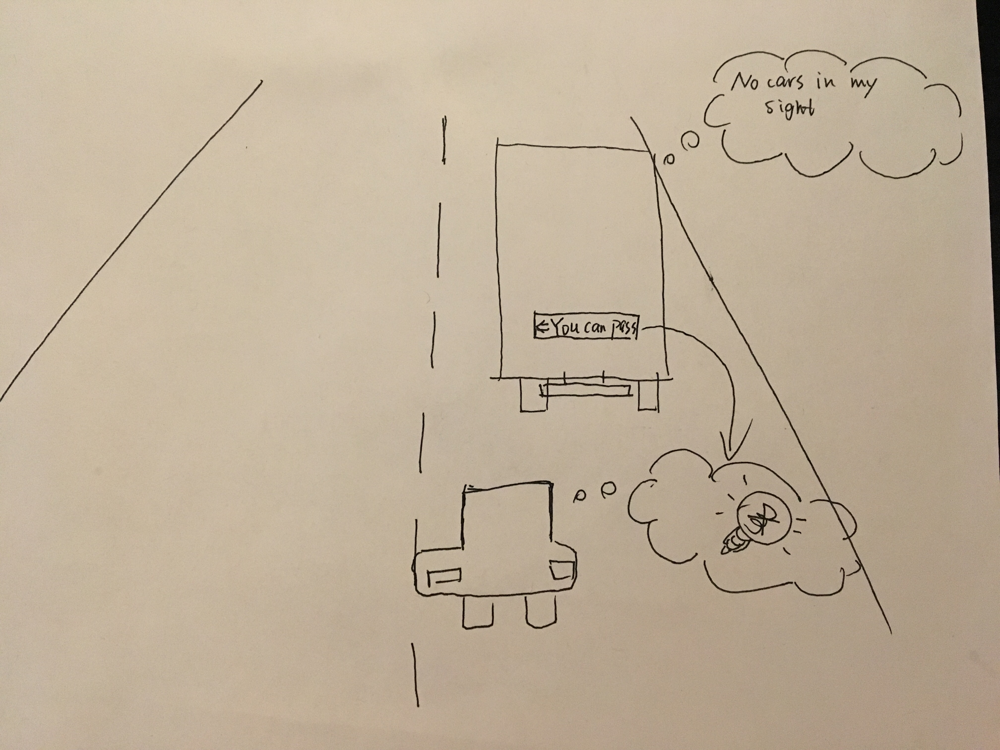

Willa Yang's Assignment 3!
 
The buses/big trucks can help cars behind them to pass on two-lane roads
(Trucks don't want small cars to follow them closely,
and car drivers don't need to constantly check be alerted)